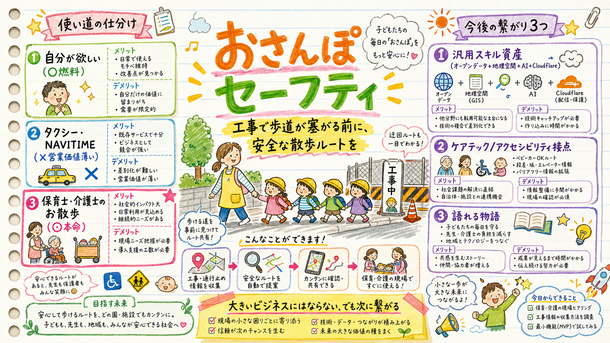

あなたの3つの使い道を仕分けると、本命は「保育士・介護士のお散歩」。“事前に必ずルートを確認する”実在行動を持つ唯一の層で、社会的にも響く。大きいビジネスにはならないが、あなたの未来には確かに繋がる。この方向でロックするかの判断材料。

あなたが挙げた3つ。強さがはっきり分かれる。
| 使い道 | 評価 | 理由 |
|---|---|---|
| 自分が欲しい | ◯ 燃料 | 作り手が最初のユーザー＝正しい出発点。ただし単体では価値の証明にならない |
| タクシー / NAVITIME | ✕ 捨てる | 本人理解通り営業価値薄い。ドライバー系はナビが既に規制を経路反映。「既存ナビへデータ供給」の筋だけメモに残す |
| 保育士・介護士のお散歩 | ◎ 本命 | 散歩ルート安全確認は実在業務。歩道封鎖＝2歳児の列や車椅子高齢者に危険。事前確認の動機が最も強い層 |
なぜお散歩が本命か：保育の散歩コース安全点検は2019年大津の事故[背景]以降、意識・運用として定着。「事前にルートを見る」が制度化された数少ない行動。ここに工事の歩道規制情報を重ねる価値は本物。
結論：繋がる。ただし“この事業が大きくなる”形ではない。
| 繋がる先 | 中身 |
|---|---|
| ① 汎用スキル資産 | オープンデータ消費＋地理空間（GeoJSON/地図）＋AI＋Cloudflareデプロイ。次のどんなプロダクトにも転用できる土台 |
| ② ドメイン接点 | ケアテック／アクセシビリティ／シビックテック。保育・介護は今後拡大する領域で、ここに実作品で触れておく価値 |
| ③ 語れる物語 | 「お散歩の安全をデータで守る」は発信・面接・次の案件で強い。感情に響くテーマ |
正直な天井：これ自体を収益事業に育てるのは難しい（無料ツール／営業先が薄い）。狙いは「事業化」ではなく「スキル証明＋ドメイン接点＋物語」を作り、そこから次に繋げること。あなたの言う“今後に繋がるならやりたい”に、その条件で合致する。
これでロックするか。
次のステップ（ロックOKなら）：先に作った設計案を「おさんぽセーフティ」に組み直す → 実装計画（Week1のコアから）→ 開発。並行してX/note週次ログ＋GitHub整備。